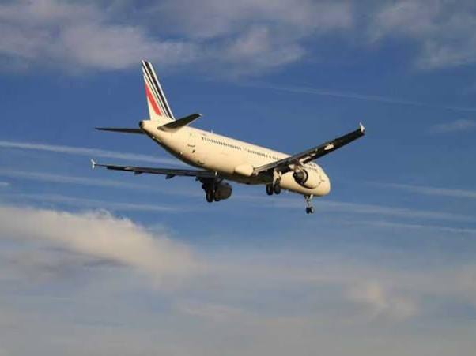
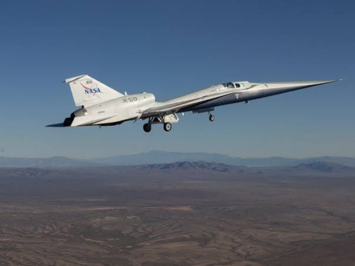
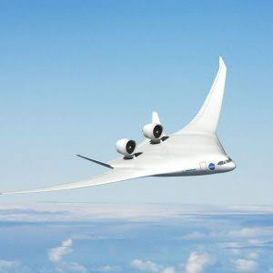
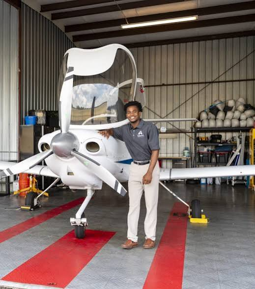
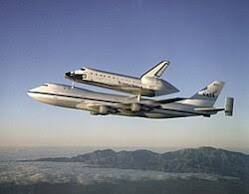
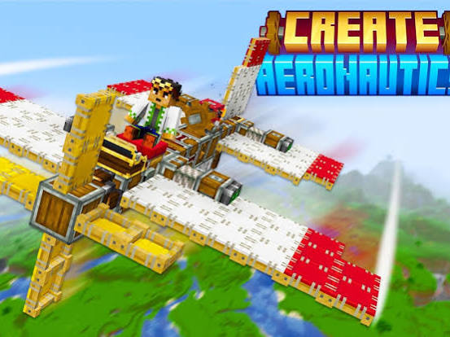
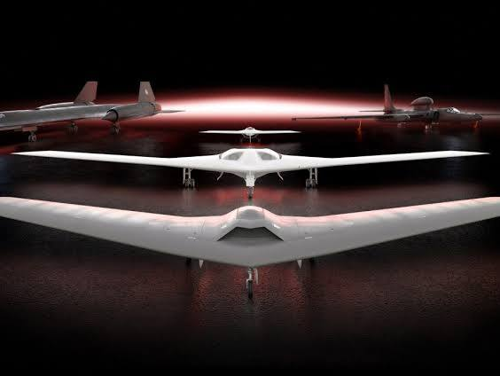

Conversation 379
Aeronautics Concepts
Prompt 1 · You
aeronautics
Response 1 · Google AI Mode







Aeronautics is the science, art, and study involved with the design, manufacturing, and operation of flight-capable machines within Earth's atmosphere. Derived from the Greek words for "air" and "sailing", the field covers everything from traditional commercial airplanes and helicopters to hot-air balloons, drones, and ballistic rockets. While often used interchangeably with "aviation," aeronautics is technically broader as it encompasses lighter-than-air craft and suborbital vehicles.  Wikipedia +2
Wikipedia +2
Wikipedia +2The Four Pillars of Aeronautical Engineering
To design any functional flight vehicle, aeronautical engineers must master four foundational areas of physics and mechanics:  NASA (.gov) +1
NASA (.gov) +1
NASA (.gov) +1- Aerodynamics: The study of how air flows around an object. This dictates the shape of the wings, tail, and fuselage to maximize lift and minimize wind resistance (drag). Spartan College of Aeronautics and Technology +2
- Propulsion: The design of engines (such as jet engines or propellers) that generate the necessary force, or thrust, to overcome drag and push a vehicle forward through the air.
 YouTube·Described and Captioned Media Program +1
YouTube·Described and Captioned Media Program +1 - Materials and Structures: The selection and arrangement of structural elements. Modern aerospace relies heavily on ultra-lightweight yet strong materials like composites to optimize fuel efficiency without sacrificing structural integrity. Spartan College of Aeronautics and Technology +1
- Stability and Control: The implementation of control surfaces (like ailerons, rudders, and elevators) and navigation systems. This allows pilots or automated systems to manage speed, direction, altitude, and orientation safely. YouTube·polartt +2
Emerging Frontiers in Aeronautics
The aviation landscape is currently experiencing rapid evolution driven by sustainability, defense, and high-speed research:
- Supersonic Flight over Land: Ongoing aerospace missions, such as NASA Aeronautics' Quesst Mission, are utilizing experimental aircraft like the X-59 to pioneer technology that dampens loud sonic booms into quiet thumps, potentially changing international rules regarding faster-than-sound commercial travel over land.
- Uncrewed Aerial Systems (UAS): Defense technology is focusing heavily on sovereign drone capabilities and counter-UAS interceptor platforms, driven by defense groups like Aeronautics Group.
- Urban Air Mobility (UAM): Engineering specializations are moving toward fully electric propulsion, eco-friendly widebody designs, and localized urban air transit to dramatically reduce carbon footprints. Universiteit Twente +3
Are you looking at aeronautics from a career and academic perspective, wanting to learn about specific aircraft engineering principles, or exploring its application in popular software like Minecraft's "Create Aeronautics" mod?
Source links preserved from this response
- Wikipedia
https://en.wikipedia.org/wiki/Aeronautics - NASA (.gov)
https://www.grc.nasa.gov/www/k-12/UEET/StudentSite/aeronautics.html - Spartan College of Aeronautics and Technology
https://www.spartan.edu/news/explain-aeronautics-to-me/ - YouTube · Described and Captioned Media Program
https://www.youtube.com/watch?v=Z9-WAWltet8 - YouTube · polartt
https://www.youtube.com/watch?v=vpJVtXwHYCk - NASA Aeronautics' Quesst Mission
https://www.nasa.gov/aeronautics/ - Aeronautics Group
https://aeronautics-sys.com/ - Universiteit Twente
https://www.utwente.nl/en/education/master/programmes/mechanical-engineering/specialisations/aeronautics/